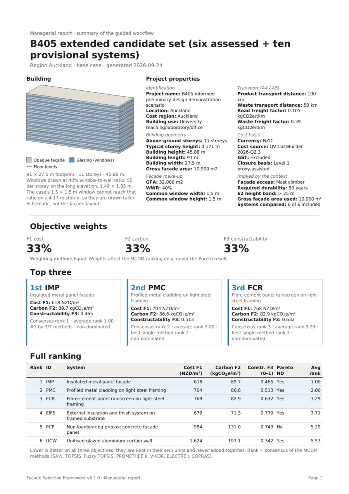

Choosing a Façade When Cost, Carbon and Buildability Disagree
The cheapest cladding is rarely the lowest carbon, and the lowest carbon is often the hardest to build. This framework keeps all three objectives in their own units, compares the candidates without weights first, then ranks them with seven MCDM methods and tests how robust the answer is — delivered as a deployed application with a one-click route to a managerial report.
PythonStreamlitpandas / NumPyPlotly 3Dopenpyxlreportlab (PDF)pytest + AppTestAzure App ServiceAHP / entropy / CRITICTOPSIS, PROMETHEE II, VIKOR, ELECTRE I, COPRAS
ResultA defensible façade choice at specification stage, with its trade-offs, evidence and robustness stated.
Problem formulation
Three objectives that refuse to agree
University of Auckland · a decision-support framework and the application that carries it.
At preliminary design a specifier chooses a façade system while the decision is still cheap to change. Three
things matter and they pull apart: installed cost, embodied carbon, and how hard the system is to build on this
particular building. The cheapest cladding is rarely the lowest carbon, and the lowest carbon is often the hardest
to build.
The formulation choice that shapes everything else: the three objectives are never added into one score.
Each stays in its own unit — F1 cost in NZD/m², F2 embodied carbon in kgCO₂e/m², F3
constructability as a 0–1 burden index — and the trade-off is handed to the specifier, with the
evidence behind every number.
Data & evidence · descriptive analysis
Every number carries its evidence
Reusable Excel case workbooks: project inputs, libraries, bills of materials, sources.
Cost from QV CostBuilder rates, resolved for the project’s market region, plus scaffold and
crane adjustments that grow with building height.
Carbon from product-stage (A1–A3) emission factors, with A4 transport and A5 waste reported
separately.
Constructability from twelve indicators in three dimensions, each assessed against fixed class
anchors (0–4) with the observation and evidence status beside it.
Missing values are never zero. A system without complete data is withheld with the reason stated,
and the share of each result that rests on proxy data is shown next to it.
Diagnostic analysis
Screen, then compare without weights
Advisory code screening and a Pareto comparison come before any ranking.
Advisory screening checks each candidate against the NZ Building Code clauses in the supplied handbook —
B2 durability, C3.5 vertical fire spread, C3.6 boundary radiation — and abstains rather than passes
where the governing Acceptable Solution is not available, so a missing document never clears a candidate.
The primary result is weight-free: the Pareto comparison separates the systems no other system beats
on all three objectives from those that are dominated. In the demonstration case, five of six assessed systems are
non-dominated and one is dominated.
Estimation · scenarios
A cost, carbon and constructability model of this building
Context drives the numbers: region, height and geometry change the result immediately.
Region, storeys, height and façade geometry re-price the rates, resolve the regional transport reference and
set the access method, so the same system costs differently on a four-storey and an eleven-storey building.
Scenarios hold alternative assumptions as changes against the base case, side by side, without touching it.
Prescriptive · multi-criteria decision
Seven methods, one consensus, and a test of how robust it is
A recommendation that says how far the priorities can move before it changes.
Weights set directly, by AHP pairwise comparison with its consistency ratio, or derived from the
data (entropy, CRITIC) — or a blend.
Seven MCDM methods — SAW, TOPSIS, fuzzy TOPSIS, PROMETHEE II, VIKOR, ELECTRE I, COPRAS
— combined into a consensus ranking, with Kendall’s W for how far they agree.
Robustness: a sweep over every weight combination, stability intervals for the first choice, and
interval analysis with ±20% on proxy inputs.

The one-page managerial report the application exports: building, properties, objective weights, top
three and full ranking. Demonstration case, equal weights.
Software delivery
A deployed application, not a spreadsheet
Python and Streamlit on Azure App Service, released as tagged versions.
Guided workflowNine steps from project characteristics to the report, each confirmed before
the next opens; edits are reviewed as old → new before they apply.
Auto modeRuns every step with the case’s own values and opens the managerial report
— stopping, with the reason, at any step that cannot be confirmed.
ReportsA managerial report with a 3D massing of the building, and PDF export of both the
managerial and the full decision report.
Quality & deployment214 automated tests, including headless UI tests of every page;
Azure App Service with a packaging script that refuses to ship a build missing a runtime asset.
Stack: Python, Streamlit, pandas, NumPy, Plotly (including 3D), openpyxl case workbooks, reportlab PDF generation,
pytest with Streamlit AppTest, Azure App Service (Linux). Access to the hosted app is on request.
Business value
What it’s worth
A carbon decision that can be defended at specification stage.
16
façade systems in the demonstration case
7
MCDM methods in the consensus
3
objectives, never collapsed into one score
214
automated tests
The value is timing and defensibility: the choice is made at preliminary design, when changing it costs little, and
it arrives with its trade-offs, its evidence and its robustness stated — so a specifier can explain why a
lower-carbon system was chosen, or why it was not.